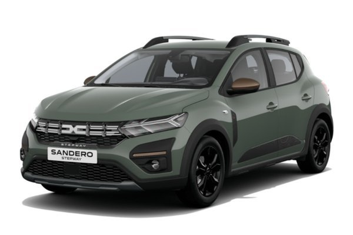

Dacia Sandero Stepway 2024
- 🔧 Moteur : 1.0L TCe ou ECO-G – jusqu’à 110 ch
- ⚡ 0–100 km/h : environ 11 secondes
- ⛽ Consommation : environ 5.5 l/100km
- 📐 Dimensions : 4.10m x 1.84m x 1.53m – Garde au sol surélevée
- 🎛️ Équipements : écran tactile 8", Android Auto/Apple CarPlay, caméra de recul, barres de toit modulables
- Our Models
Discover the Sandero Stepway
Contact us today to learn more about this smart urban SUV and book your test drive.
Contact Us